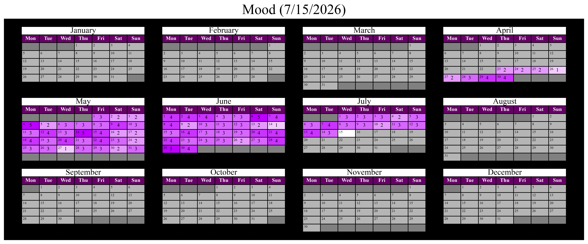
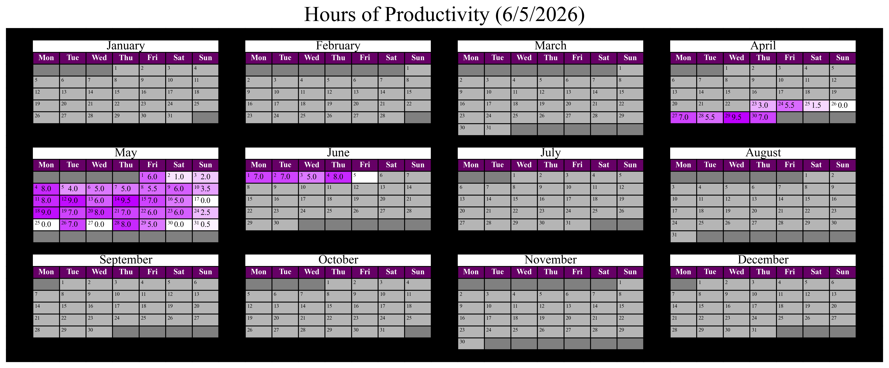
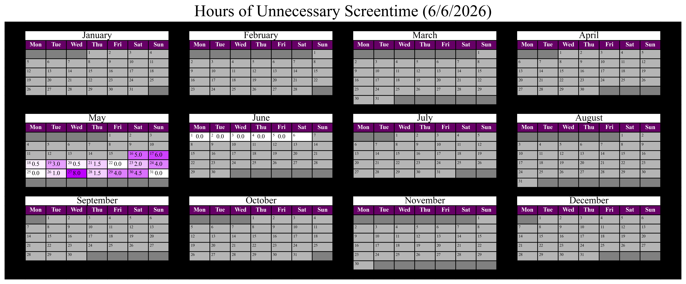

Here are some stats I'm collecting.
Papers

I want to read one paper a day. "Reading" is considered to be consuming the important information from the text (i.e., likely about 80% of the entire text; in my field, it would be everything except for the results section of the paper, which I would very briefly skim), and a "paper" is considered to be a ~10-page research report. My goal for the end of the year is to read 300 papers. See the paperzone for more details on this.
Mood

I'm tracking my mood on a scale of:
- 0 (super duper bad)
- 1 (really bad)
- 2 (bad)
- 3 (baseline)
- 4 (good)
- 5 (really good)
Most days should have a mood of 3, with 1 and 5 being sparse, and 2 and 4 being less common. 0 should basically never occur.
Productivity

Productivity is given in hours. I consider "productivity" to be time spent on my job, school, a research project that will eventually get published, or any other "necessary" activity that I cannot avoid. I do not consider other activities to be productive even if they may benefit my future, including but not limited to maintaining this website, writing blog posts, cooking, shopping, etc. Furthermore, a productive activity may become unproductive after a certain point (i.e., if I'm working on a tool for my research, then continuing to polish it even after it's considered "done" would drift away from being productive and drift towards being a fun activity, no longer justifiable as a task for my job). Hours listed are approximate; I do not use time-tracking tools.
Screentime

Screentime is given in hours. "Screentime" is any time spent looking at a screen for purposes that are not productive according to the above and which do not have any other benefit. For example: while reading a book on a screen would not be considered "productive," I would consider it more to be more of a "neutral" activity. "Screentime" concerns those activities which are wholly bad or are otherwise less-than-neutral, including using social media in any capacity or using a platform like Discord past a certain time limit. For platforms like BlueSky/Twitter, every minute spent on them adds to the Screentime counter; for platforms like Discord, every minute past 15 minutes in a day adds to the Screentime counter unless the time spent is scheduled (i.e., calling a friend for two hours; time spent after those two hours adds to the counter). I would like to have at most 2 days a week have values in them (such that the other five days in the week are 0.0), with no more than 4 hours of screentime combined across those two days. Hours listed are approximate; I do not use time-tracking tools.
Anime

Episodes of anime watched. An anime episode is about 24 minutes long.
Clean

Represents times I've cleaned my living space. "Cleaning" could take as little as five minutes, so long as the thing being cleaned is tangibly improved afterwards. Also, "cleaning" doesn't include laundry or other things that must be cleaned (this is kind of arbitrary, I have a good habit of doing laundry so I don't want to clutter the list with that, but something like bedsheets is something I don't have a habit of doing, so I'm counting that as cleaning). I want to keep a clean space, so I should clean at least once a week.
Fruit

Times I've eaten fruit. Fruit is yummy and is good for you. I should be eating fruit daily.
Vegetables

Times I've eaten vegetables. Vegetables are less yummy but they are very good for you. I should be eating vegetables daily.
Workout

Times I've worked out at a dedicated location (e.g., gym or other separate location). I do a lot of walking outside, so I don't consider walks to be working out, even if the walk is very long. Working out should take 25 minutes or more. I should be working out three times a week or more. (Quality of the workout doesn't really matter; I like to do 20 minutes of cardio to get my heartbeat high, then I pick a random machine to do for 5 minutes. Alternating machines is hard because I'm shy and the gym is sometimes busy, and complicating the routine could add friction to my desire to work out, so this is my starting point.))